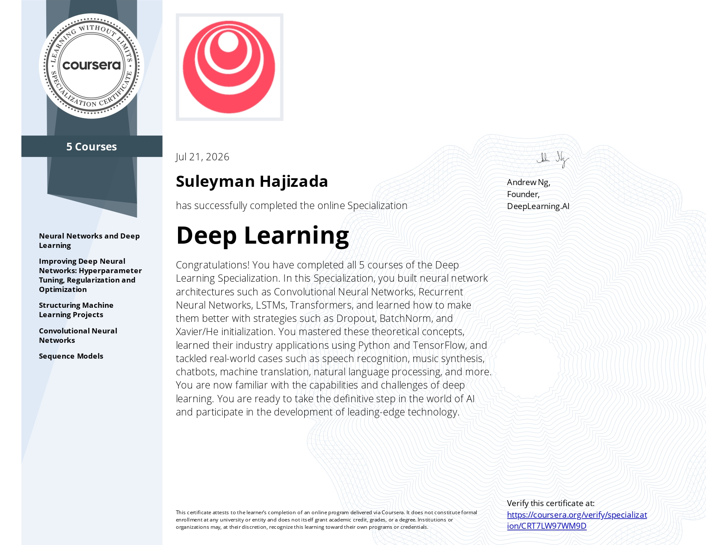

Deep Learning Specialization (5 Courses)
🏛️ DeepLearning.AI / Coursera
Konvolyusiyalı Neyron Şəbəkələri (CNN), Rekurrent Şəbəkələr (RNN), LSTM, Transformerlər və Dərin Öyrənmə arxitekturaları üzrə 5 kursluq ixtisaslaşma proqramı.